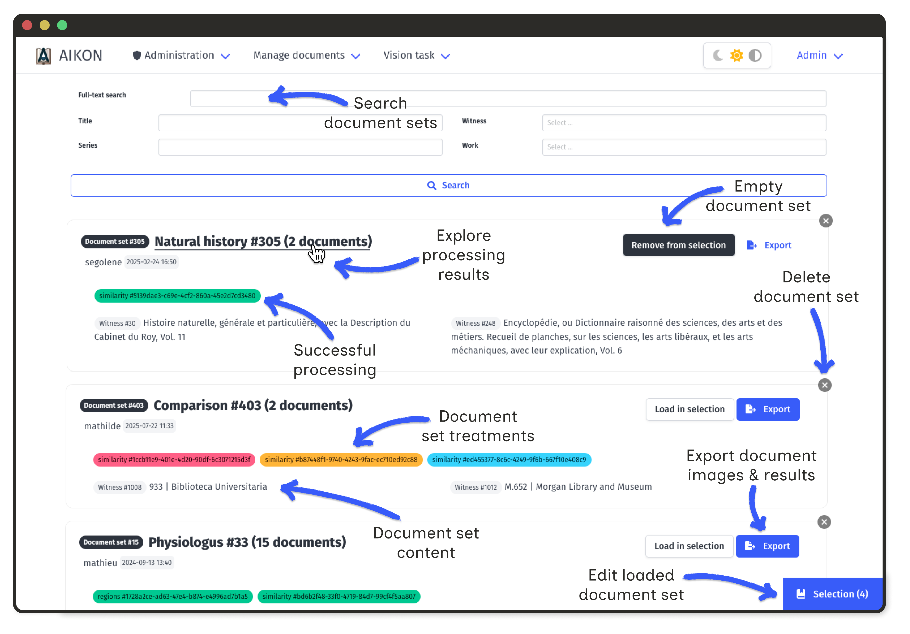
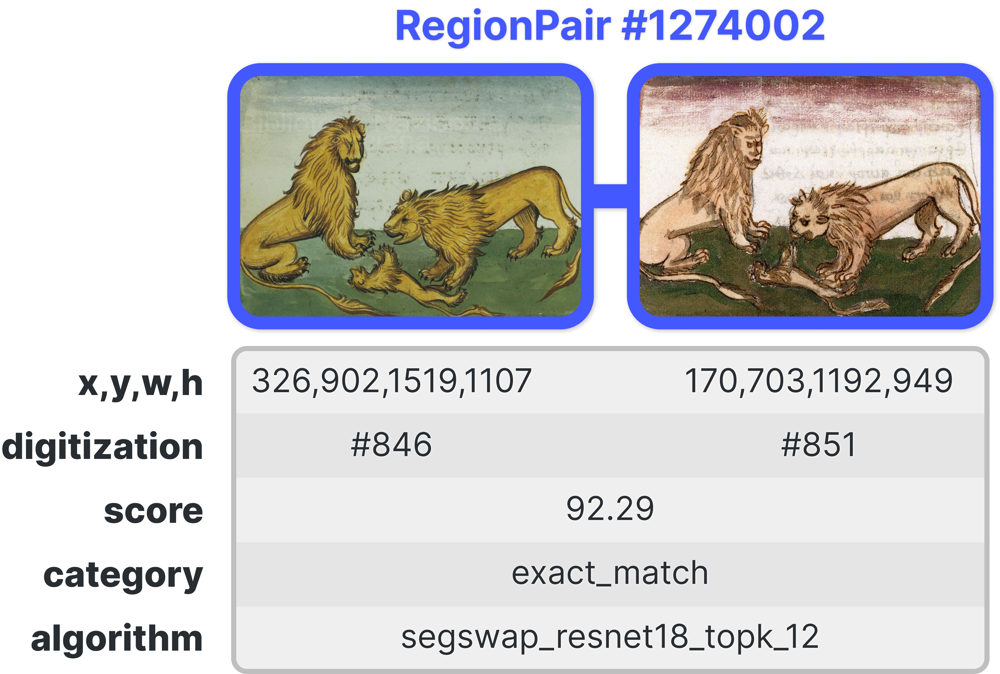
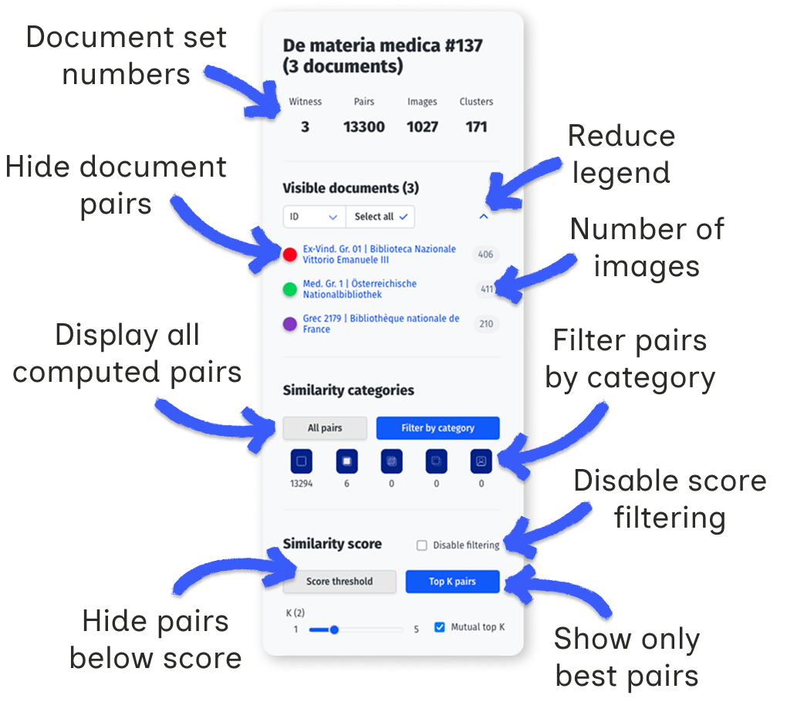

Analysis & Interpretation
AIKON provides visualization interfaces to help researchers examine transmission networks and circulation patterns across corpora.
Set-Level Visualizations
Document set views aggregate similarity data across multiple witnesses. These interactive visualizations help identify document relationships.

All visualisations rely on the same underlying data: each document holds a number of extracted image regions, and each region is linked to a number of similar regions in other documents.
This link is stored as a pair of images, associated with an automatic similarity score, a user-defined category and information on the algorithm used to compute the score.

Filtering Options
All visualizations support filtering using sidebar controls:
- Document Filter by document to focus on specific witnesses
- Category Filter by similarity category (exact, partial, semantic, etc.)
- Score Adjust score thresholds to show only high-confidence matches

Category filtering
Categories are user-defined labels that qualify the type of similarity between two regions. By default, only pairs marked as exact matches are displayed.
Changing the category selection triggers a new request to the server. The initial load when selecting "All pairs" may take a few seconds depending on corpus size.
Document filtering
A document set groups series, works, and witnesses. Each witness may have one or more digitizations, from which image regions are extracted. The visualization displays pairs of similar regions across these digitizations.
The "Visible documents" legend lists all digitizations in the current set. Each digitization is represented by a colored dot. A single witness may appear multiple times if it has several digitizations. The grey number indicates how many regions were extracted from each digitization.
Click on a dot to show or hide pairs containing regions from that digitization. When changing category selection, new digitizations may appear unselected in the legend; use "Select all" to include them.
The legend can be collapsed to show only dots using the bracket icon. Sorting options allow reordering by title, witness, or ID.
Score filtering
Each pair has a weighted score combining the computed similarity score with the category weight:
| Category | ||||||
|---|---|---|---|---|---|---|
| Weight | 0 | 1.0 | 0.5 | 0.125 | −1.0 | 0.125 |
Two filtering modes are available:
- Score threshold: display only pairs above a minimum weighted score.
- Top K: for each region, keep only the K highest-scoring pairs. With "Mutual top K" enabled, both regions must rank each other in their top K.
Clusters
Document set clusters group images that are linked by at least on pair of similarities whose score exceeds the selected threshold.
Matrix Visualization
The similarity matrix shows pairwise document comparisons. Color intensity indicates the number of similar regions between documents.

Click on a cell to open a detailed matrix for that document pair. Axes show ordered illustrations; intensities reflect similarity ranks or annotations.
This view reveals whether copied illustrations maintain their original order, appear clustered in specific sections, or follow reorganization patterns.
Document Network Graph
Documents appear as nodes in an interactive graph. Edge width corresponds to the number of shared regions. Node size reflects connectivity.

Select nodes to display a table of all connected regions. This makes it easy to identify visual shifts, such as systematic mirroring.
Region Network Graph
At the region level, the network displays all extracted regions from a document set. Nodes represent individual regions; edges represent correspondences.

- Node size proportional to the number of connections
- Edge width reflects similarity score (when available)
- Selection click nodes to view images and metadata
Large nodes indicate commonly copied images. Isolated nodes represent unique illustrations.
Stemma editor
The stemma editor allows users to try different ways to connect document within the set and test their hypothesis by looking at regions of interest of the documents through several visualization tools.